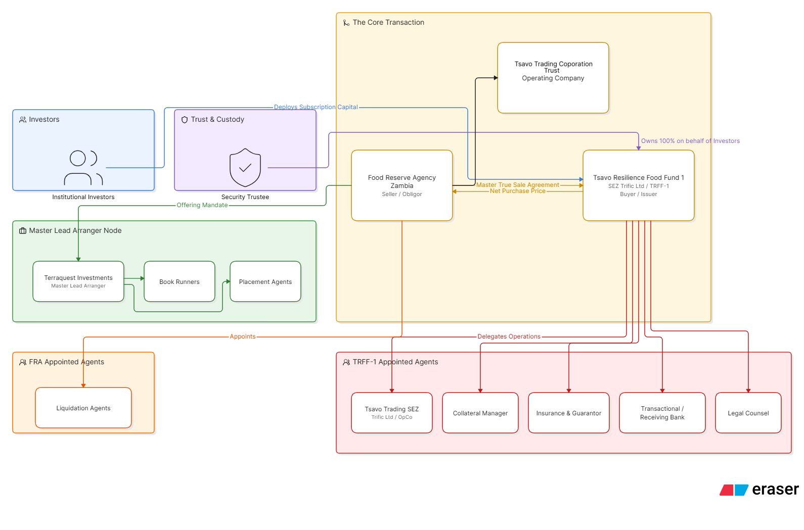

Strictly Private & Confidential
Institutional Investors Only
Tsavo Resilience Food Fund 1 - Zambia
Initial Issuance:
USD 100,000,000
Series 1: Senior Secured Commodity Notes
Institutional Private Placement Memorandum
Dated: June 2026
Issuer
Tsavo SEZ SPV Limited
[In Formation in Kenya under SEZ Act]
Master Lead Arranger

CONFIDENTIALITY NOTICE: This document contains proprietary structural and commercial information regarding the Tsavo Resilience Food Fund 1. It is strictly restricted to the addressee.
Base Currency: USD (Hard Currency)
Confidential Memorandum
Strictly Private & Confidential
DISTRIBUTION RESTRICTION AND REGULATORY NOTICE
FOR SOPHISTICATED, PROFESSIONAL, AND INSTITUTIONAL INVESTORS ONLY.
THIS DOCUMENT IS NOT A PROSPECTUS OR AN ALTERNATIVE INVESTMENT FUND OFFERING.
This Private Placement Memorandum, the "Memorandum," is a private invitation strictly restricted to the named addressee. It establishes the parameters of a private debt transaction and must not be construed as a public offer of securities or an invitation to the general public to subscribe for securities under the Capital Markets Act, Chapter 485A of the Laws of Kenya, or the regulations thereunder.
IMPORTANT NOTICE & DISCLAIMERS
THIS DOCUMENT IS IMPORTANT AND REQUIRES YOUR CAREFUL ATTENTION. IF YOU ARE IN ANY DOUBT AS TO THE CONTENTS OF THIS MEMORANDUM OR THE ACTION YOU SHOULD TAKE, YOU SHOULD CONSULT YOUR LEGAL, FINANCIAL, TAX, OR OTHER PROFESSIONAL ADVISOR.
1. Nature of the Offering & The Programme
This Memorandum is issued by Tsavo SEZ SPV Limited, the "Issuer," in respect of the establishment of the USD 400,000,000 Tsavo Resilience Food Fund 1 - Zambia, the "Programme," and the initial private placement of the USD 100,000,000 Series 1: Guaranteed Senior Secured Notes, the "Notes," issued thereunder. This offering provides institutional entry into agri-commodities as asset-backed securities through secured off-balance sheet structuring. The Issuer operates exclusively as a special purpose vehicle for this transaction. Subject to definitive agreements and the perfection of conditions precedent, the Issuer will formalize its operations. The Issuer operates as an independent commercial entity and is not a Collective Investment Scheme, Real Estate Investment Trust, or Alternative Investment Fund under Kenyan law. This Memorandum operates independently of registration with or approval by the Capital Markets Authority of Kenya or the Nairobi Securities Exchange.
2. Distribution Restrictions
This Memorandum is provided on a strictly private and confidential basis to a limited number of pre-selected, sophisticated institutional investors, including pension funds, asset managers, and high-net-worth entities, equipped with the capacity to evaluate the merits and risks of the investment. It remains the proprietary intellectual property of the Master Lead Arranger and requires prior written consent for any reproduction, copying, distribution, or publication, in whole or in part.
3. Return Profile & Risk Factors
Returns are generated directly from the performance of the underlying commercial trade and the execution of the Master Commodity Sale, Repurchase & Liquidation Agreement. The Programme enforces a Multi-Layered Security Architecture, including physical collateralization, ring-fenced cash reserves, and targeted institutional credit enhancements, to mitigate exposure. Investors must evaluate the transaction on its specific merits, utilizing historical or projected performance strictly as an illustrative guide.
4. Forward-Looking Statements
This Memorandum contains forward-looking statements relating to the Issuer's proposed commercial operations, commodity market dynamics, and regional trade deficits. These statements reflect the current strategic views of the Master Lead Arranger and the Issuer, operating subject to macroeconomic variables, geopolitical shifts, climate conditions, and regulatory execution.
5. Sovereign and Counterparty Context
The underlying assets backing this Programme derive from a commercial transaction with the Food Reserve Agency of Zambia. The Notes are exclusively obligations of the Issuer, functioning independently of sovereign debt classifications, while utilizing sovereign waivers and export permits issued by the Government of the Republic of Zambia to execute the transaction's legal framework.
6. Status of Definitive Agreements
The execution of this offering, the formal establishment of the Issuer, and the issuance of the Notes proceed strictly upon the satisfaction of all Conditions Precedent and the execution of definitive legal agreements. The Appointed Agents and Service Providers listed in the Corporate Directory herein represent the targeted institutional architecture. The Master Lead Arranger maintains the absolute right to finalize, appoint, or substitute the Trustee, Custodian, Collateral Manager, Legal Counsel, Guarantors, or Insurers prior to financial close to optimize the transaction's security profile.
CORPORATE DIRECTORY
| The Issuer |
Tsavo SEZ SPV Limited [In Formation] |
Kenya (TRIFIC SEZ) |
| The Counterparty |
Food Reserve Agency (FRA) |
Zambia |
| Master Lead Arranger |
Terraquest Investments FZCO |
UAE |
| Note & Custody Trustee |
MTC Trust and Corporate Services [Proposed] |
Kenya |
| Receiving & Transactional Bank |
ABSA Bank Group [Proposed] |
Kenya & Zambia |
| Collateral Manager |
Collateral Management International (CMI) [Proposed] |
Zambia |
| Property & Fidelity Insurer |
NICO Zambia [Proposed] |
Zambia |
| Political Risk Insurer (PRI) |
Zep-RE / W-SAFE / London Syndicate [Proposed] |
Regional / Global |
| Credit Guarantee Provider |
Dhamana Guarantee Company [Targeted] |
Kenya / Regional |
| Legal Counsel |
Mboya Wangong'u & Waiyaki Advocates [Proposed] |
Kenya / Zambia / UK |
 Confidential Memorandum
Confidential Memorandum
1. EXECUTIVE SUMMARY
The Macro & Market Context
Sub-Saharan Africa possesses an estimated 60 percent of the world's uncultivated arable land. Agriculture operates as the economic foundation of the region, contributing approximately 15 percent to the continent's combined GDP and employing over 60 percent of the total workforce. Based on these baseline assets, continental and global economic standards, specifically the Malabo Declaration, mandate that African sovereigns allocate a minimum of 10 percent of their national budgets to agricultural development and strategic procurement to effectively harness this economic potential.
Sovereign exchequers face severe fiscal constraints. Against a combined Sub-Saharan GDP of approximately USD 2.0 trillion, regional public expenditure averages 20 percent, generating a cumulative sovereign budget pool of roughly USD 400 billion. While the Malabo mandate dictates a 10 percent allocation to agriculture, representing USD 40 billion, severe debt servicing burdens restrict actual government allocations to an average of 2.5 percent, providing just USD 10 billion. This 7.5 percent delta between the statutory mandate and fiscal reality creates a quantifiable sovereign working capital deficit of USD 30 billion annually.
This deficit directly constricts national food reserve agencies, restricting timely post-harvest procurement. Delayed procurement forces smallholder farmers into distress-selling, triggering supply chain disruptions and food price volatility for regional consumers.
This USD 30 billion sovereign gap operates entirely separate from the USD 65 billion commercial agricultural financing gap cited by multilateral institutions, which primarily tracks the private sector shortfall for commercial banks and SMEs. The total agricultural working capital void, combining these unfunded sovereign food security mandates with the commercial deficit, approaches USD 95 billion annually. This systemic starvation of institutional liquidity, rather than a lack of underlying production capacity, drives the region's USD 50 billion annual food import bill.
TRF-1 (Zambia) serves as an institutional liquidity bridge to resolve this structural working capital deficit. By deploying an asset-backed securitization architecture that legally isolates physical commodities from operational and sovereign risks, TRF-1 (Zambia) mobilizes institutional capital to finance these statutory mandates. This structure injects immediate liquidity into the procurement cycle, mitigating harvest-driven price volatility and accelerating disbursements to smallholder farmers. Operating independently of sovereign debt classifications, TRF-1 (Zambia) transforms this USD 95 billion working capital void into a scalable, institutional-grade asset class.
The Strategic Roadmap
The Programme operates as a scalable financial blueprint for the continent's agricultural independence, directly connecting producers with consumers to catalyze Intra-Africa trade. The target geography spans East, Central, and Southern Africa, specifically integrating Zambia, Zimbabwe, Malawi, Botswana, Namibia, Mozambique, Angola, Kenya, Tanzania, and Uganda. The strategy executes through a phased, multi-product rollout:
- Short-to-Medium Term: The deployment of the trade finance sequence, comprising Funds I, II, III, and IV. Commencing with the initial USD 400M capacity under TRF-1 (Zambia) for the Food Reserve Agency, the trade architecture scales to a target of USD 1B within five years. Subsequent iterations explicitly target equivalent sovereign agencies, such as the National Food Reserve Agency in Tanzania and the National Cereals and Produce Board in Kenya, establishing a continuous, cross-border liquidity mechanism.
- Long-Term: The Tsavo Infra-Fund operates as a dedicated, parallel intention. Structured as a 7-to-10-year closed-end vehicle, it creates a permanent solution by crowding in infrastructure-linked capital to develop and modernize food security infrastructure. The Infra-Fund and Trade facilities operate synergistically: the Trade facilities guarantee the continuous commodity throughput required to resolve the utilization risk that historically deters commercial banks from financing physical assets. Utilizing an industry benchmark of USD 250 to USD 300 per Metric Tonne for fully integrated facilities, the Infra-Fund is seeded with an initial USD 150M anchor raise to establish a foundational capacity of 600,000 MT. The end goal is to scale to a USD 10B AUM, targeting a continental footprint of 40M MT. This capital develops modern grain terminals, drying, fermenting, and processing hubs for a diversified crop matrix, including Maize, Soya Bean, Sorghum, Millet, and Sunflower Seed, driving local value addition through human and animal feed, Soya and Sunflower meal and cake, Ethanol, and seed oils.
The Investment Rationale
TRF-1 (Zambia) transforms agri-commodities into institutional-grade, asset-backed securities. This facility provides immediate working capital to the Zambia Food Reserve Agency to capitalize its strategic reserve mandate. Acting as a scalable financial architecture for the region, TRF-1 (Zambia) provides domestic institutions with a secure, high-yield allocation that directly finances continental food security, operating independently of sovereign balance sheets and multilateral aid.
Transaction Structure
TRF-1 (Zambia) utilizes a "True Sale" Master Commodity Repurchase Agreement. The Programme legally acquires unencumbered title to physical Non-GMO White Maize, anchoring the exposure directly against liquid, essential commodities to eliminate sovereign credit risk.
Priority of Claims
The Series 1 Notes are exclusively Senior Secured instruments, establishing an absolute priority of claims for Noteholders. This structure explicitly isolates investor capital from sovereign credit risk, successfully navigating the traditional credit rating constraints associated with financing sovereign-linked agricultural entities. This priority is enforced through a comprehensive, non-discretionary security framework governed by a Kenyan Corporate Trustee, ensuring first-ranking recovery for Noteholder principal and accrued yield. The security matrix comprises:
- Physical Over-Collateralization: Legal title to the stored maize commodities via statutory Negotiable Warehouse Receipts, strictly maintaining a minimum 110 percent Asset Value Floor.
- Ring-Fenced Cash Reserves: A pre-funded 10 percent cash performance margin and all subsequent collection accounts, directly pledged to and controlled by the Security Trustee.
- Institutional Credit Enhancement: A targeted Guarantee Wrap to cover default risk, supported concurrently by a comprehensive Political Risk and Property Insurance syndicate, protecting the asset from expropriation and structural damage.
- Secondary Liquidation & Off-Take Pipeline: A fully verified domestic and regional off-take network, ensuring non-speculative, cash-first market execution in the event of an Obligor default.
Regional Regulatory Alignment
By establishing the Issuer within the TRIFIC Special Economic Zone in Kenya and appointing a CMA-licensed Corporate Trustee, the Programme establishes a secure onshore nexus. This structure is designed to strictly align with statutory domestic investment guidelines, positioning the instrument across the following regional regulatory classifications:
- Retirement Benefits Authority [RBA]: Targeted classification as Guaranteed Corporate Bonds, expanding pension allocation headroom significantly beyond standard Alternative Investment caps.
- Insurance Regulatory Authority [IRA]: Engineered as a Guaranteed Corporate Debenture, serving as an Admitted Asset to optimize solvency capital charges for insurers.
- Capital Markets Authority [CMA]: Structured as High-Grade Fixed Income for inclusion in regulated Money Market and Balanced Funds.
- Sacco Societies Regulatory Authority [SASRA]: Operating as a Regulated Financial Instrument, matching strict capital preservation mandates.
2. TRANSACTION SNAPSHOT
| Issuer: |
Tsavo SEZ SPV Limited |
| Note Class: |
Series 1: Guaranteed Senior Secured Commodity Notes |
| Target Raise (Series 1): |
USD 100,000,000 |
| Programme Limit: |
USD 400,000,000 |
| Minimum Subscription: |
USD 5,000,000 |
| Tenor: |
12 Months (Bullet Repayment) |
| Target Net Yield: |
~15.00% (10% Fixed Priority Return + 50% Profit Share) |
| Security Package: |
- Physical Non-GMO White Maize (110% Coverage Minimum)
- All Trustee-Controlled Cash Accounts (Including 10% Performance Margin)
- Credit Guarantee Wrap [Targeted]
- Political Risk & Property Insurance Wrap
|
| Target Regulatory Classification: |
- RBA: Category 10 / 8 (Guaranteed Corporate Bond)
- IRA: Admitted Asset (Guaranteed Debenture)
- CMA/SASRA: High-Grade Fixed Income
|
| Governing Law: |
English Law (LCIA Dispute Resolution) |
Confidential Memorandum
3. THE MARKET CONTEXT
Who is the Food Reserve Agency of Zambia?
Ownership and Governing Law:
The Food Reserve Agency operates as a statutory body corporate, established in 1995 under the Food Reserve Act, Chapter 225 of the Laws of Zambia. It functions as the principal agricultural off-taker and market stabilizer for the Zambian government.
Core Statutory Mandate:
The agency exists to administer the National Strategic Food Reserve, explicitly mandated to stabilize inflation and provide guaranteed off-take liquidity. Under the Act, the agency manages "Designated Commodities" defined annually by the Minister of Agriculture, encompassing cereals, oilseeds, stockfeed, and various legumes, specifically including Canadian wonder beans, haricot beans, mixed beans, sugar beans, velvet beans, and cowpeas. The agency is legally mandated to formally announce its procurement plans and target quantities for these commodities in the Government Gazette prior to each marketing season. To stabilize the market, the agency is required to procure and hold a baseline physical strategic reserve typically ranging between 500,000 and 1,000,000 metric tonnes.
Primary production is driven by 1.5 million smallholder farming households, cultivating an average of 1.5 hectares (3.7 acres) per household across 3.8 million total hectares. Zambian agricultural production follows a dual-season calendar, comprising a primary rain-fed summer crop harvested between April and June, and a secondary irrigated winter crop harvested in September and October. This agricultural base produces a broad national crop profile, generating secondary crop volumes that include soya beans averaging 400,000 metric tonnes, wheat averaging 200,000 metric tonnes, and sorghum averaging 15,000 metric tonnes, utilizing a predominantly female workforce constituting 60 to 70 percent of agricultural labor.
Maize:
Production Dynamics: Maize serves as the primary staple, constituting over 70 percent of total national crop output. Between 6 and 7 million Zambians depend directly on it for their daily livelihood and annual cash income. With seasonal harvests averaging between 3.5 million and 4.9 million metric tonnes, smallholder farmers generate 93 percent of this national maize production. The Fund enables scale procurement and long-term planning, removing the reliance on erratic exchequer releases. The Fund enforces a rigorous storage standard, mandating that the acquired commodities are organized entirely through licensed, third-party warehousing to eliminate the 800,000 MT degradation risk. By utilizing private capital to secure the grain, the Fund liberates the exchequer, allowing the FRA to allocate its limited USD 90 million national budget to subsidize fertilizer and agricultural inputs for smallholders rather than freezing it in seasonal crop acquisition. The transaction architecture introduces export dynamics and a guaranteed off-take structure, ensuring the local surplus can seamlessly convert into a cash-first regional trade corridor.
Local Demand: The FRA targets this specific crop as its principal liquidity focus because of its indispensable dual-use within the Zambian economy. Domestically, the nation requires between 2.5 million and 3.0 million metric tonnes annually strictly to satisfy direct human consumption (as the primary national staple) and to supply industrial stockfeed (for poultry and livestock) and beverage processing, anchoring the entire rural economy.
Regional Demand: Once domestic human and industrial consumption is secured, Zambia leverages its dual-membership in the Southern African Development Community and the Common Market for Eastern and Southern Africa to access a duty-free market facing an aggregate, combined demand pull exceeding 6.0 million metric tonnes annually across the region. This structural void is driven by localized climate volatility, fractured supply chains, and specific consumption mandates across key sovereign markets:
- Democratic Republic of Congo: Sharing a direct, high-volume border with Zambia, the southern mining provinces, specifically Haut-Katanga, face a structural deficit exceeding 3.0 million metric tonnes. The region relies almost entirely on Zambian imports to supply maize meal for direct human consumption, acting as the primary staple to sustain the heavy industrial and urban workforce.
- Angola: Facing persistent climate vulnerability in its southern agricultural zones, Angola relies on a structural import requirement ranging between 200,000 and 500,000 metric tonnes annually. The market demands Zambian maize to satisfy dual mandates: securing the primary human staple for deficit regions and supplying stockfeed for an accelerating domestic poultry sector.
- Kenya: While official state narratives occasionally project record harvests, independent multilateral tracking by the USDA confirms a severe structural reality. Unprecedentedly high fuel and logistics costs have fractured local distribution chains, resulting in 13.6 million Kenyans currently facing insufficient food consumption and triggering an active, verified import requirement of approximately 1.0 million metric tonnes to satisfy both human consumption and a rapidly expanding poultry feed sector.
- Malawi: Severe climate shocks have decimated local crop yields, expanding the national deficit to 1.2 million metric tonnes and necessitating a formal national disaster declaration to secure emergency imports for direct human consumption.
- Zimbabwe & Mozambique: Persistent regional drought conditions have created a combined supply shortfall of 1.2 million metric tonnes to meet both human staple and livestock survival requirements.
Storage Infrastructure:
To execute this mandate, the FRA manages a national network of silos, hard-standing slabs, and secure sheds distributed across Zambia's 10 provinces, with primary complexes located in the high-yield Southern, Central, and Eastern agricultural corridors. This installed permanent infrastructure provides an aggregate capacity of approximately 1.2 million metric tonnes. However, to fulfill the minimum Strategic Reserve baseline and stabilize the market during consecutive bumper harvest seasons, the FRA is frequently mandated to procure up to 2.0 million metric tonnes. This creates a severe capacity mismatch. The installed infrastructure can safely house the baseline strategic reserve, but back-to-back peak procurement triggers an acute, quantifiable structural storage gap of 800,000 metric tonnes, exposing massive volumes of grain to degradation and spoilage if overflow storage cannot be secured.
Funding Structure:
The FRA is principally funded by the national exchequer through annual budgetary allocations. To execute the peak procurement of 2.0 million metric tonnes during the immediate post-harvest window, the agency requires an upfront capital outlay of USD 500 million to USD 620 million, with inland maize prices trending upward from USD 250 to USD 310 per metric tonne. Based on the 2025 Zambia National Budget, the official government allocation for the "Strategic Food Reserves" provides the agency with exactly ZMW 2.366 Billion, equating to approximately USD 90 million to USD 100 million in sovereign capital. This exposes a severe exchequer shortfall exceeding USD 400 million right at the onset of the harvest window.
Under Paragraph 10(2)(b) of the Schedule to the Food Reserve Act, Chapter 225 of the Laws of Zambia, the agency possesses the explicit statutory mandate to borrow and mobilize financing from commercial markets independently of the exchequer. The agency traditionally exercises this mandate by raising up to USD 200 million from domestic retail banks, introducing critical structural bottlenecks. Traditional retail lending relies on a rigid underwriting matrix of hard security, balance sheet leverage limits, and historical cashflow evaluation. Consequently, retail banks frequently heavily discount physical maize collateral by over 50 percent, or reject it entirely, viewing the overflow maize stored on hard-standing slabs or under temporary sheds as unviable due to environmental exposure risks. Furthermore, local commercial banks lack the technical capacity required to evaluate complex, off-balance sheet transactions, and their conventional retail credit approvals are chronically slow, completely missing the narrow post-harvest procurement window. This reliance on fragmented, inefficient retail debt ultimately cements a chronic cost of capital gap, restricting the agency from executing its stabilization mandate.
The 2024-2026 Seasons:
Validated by the May 2026 Crop Forecasting Survey, Zambia projects a massive bumper harvest of 4.9 million metric tonnes for the 2025/2026 season. Subtracting the 2.5 million to 3.0 million metric tonnes required for domestic consumption, this yield, combined with carryover stock from the 2024/2025 recovery cycle, generates a verified export surplus capacity exceeding 1.5 million metric tonnes. It is exactly this overlap—the transition of carryover stock compounding with a fresh 4.9 million MT bumper crop—that currently breaks the 1.2 million MT storage capacity and exhausts the exchequer's USD 90 million budget, creating a severe, immediate working capital void.
Confidential Memorandum
4. TRANSACTION ARCHITECTURE
4.1 THE STRUCTURAL FRAMEWORK
The Programme relies on a bankruptcy-remote architecture to legally isolate investor capital from sovereign risk. The structure establishes strict boundaries between fiduciary oversight, daily operational management, and physical commodity custody.
Exhibit 4.1: Master Architecture & Fiduciary Control

4.2 THE CAPITAL WATERFALL AND TRANSACTION LEGS
The Programme executes capital deployment, maturation, and risk mitigation through three distinct operational legs.
Leg One: The Purchase Leg
This phase details the secure transfer of investor capital into physical, collateralized assets.
1
Deploy Subscription Capital
Institutional Investors deploy capital into the TRFF-1 (Buyer) Receiving Account.
2
Transfer Legal Title
FRA Zambia (Seller) executes the True Sale and transfers legal title of commodities to TRFF-1.
3
Verify & Issue Receipts
The Collateral Manager verifies the volume/quality and issues Negotiable Warehouse Receipts to the Receiving Bank.
4
Disburse Net Purchase Price
The Receiving Bank disburses the net purchase price directly to FRA Zambia.
5
Retain Performance Margin
The Receiving Bank deducts and retains 10% in the ring-fenced Margin Escrow Account.
Leg Two: The Repurchase Leg
This phase governs the successful maturation and settlement of the transaction.
1
Remit Repurchase Principal
FRA Zambia remits the Repurchase Principal and Repo Margin to the TRFF-1 Collection Account.
2
Instruct Release of Receipts
TRFF-1 instructs the Receiving Bank to release the Warehouse Receipts.
3
Release Statutory Receipts
The Receiving Bank releases the Statutory Warehouse Receipts back to FRA Zambia.
4
Execute Capital Waterfall
The Receiving Bank executes the capital waterfall, distributing Principal + Yield to Institutional Investors.
5
Distribute Operational Fees
The Receiving Bank distributes the final operational fees to the Master Lead Arranger and agents.
Leg Three: The Liquidation Leg
This phase acts as the absolute fail-safe in the event of an Obligor default.
1
Event of Default
FRA Zambia fails to remit Repurchase Price to the Security Trustee.
2
Assume Administrative Control
The Security Trustee assumes total administrative control of TRFF-1.
3
Trigger Secondary Sales
Tsavo Trading SEZ triggers secondary market sales agreements with Liquidation Agents.
4
Deposit Liquidation Proceeds
Liquidation Agents deposit the proceeds into the TRFF-1 Collection Account.
5
Distribute Recovery Principal
TRFF-1 distributes the recovery principal and default yield to Institutional Investors.
6
Call Guarantee Wrap
The Security Trustee calls upon the Guarantee Wrap/Insurance if any shortfall occurs.
Confidential Memorandum
5. SECURITY PACKAGE AND RISK ISOLATION
TRFF-1 (Zambia) operates as an institutional-grade, finance-engineered product providing direct investment exposure to agricultural commodities as an asset class. The vehicle systematically neutralizes commodity volatility and sovereign-linked counterparty risk, enabling regulated investors to deploy scale capital through secure off-balance-sheet securitization. To establish the Senior Secured status and mandate absolute priority of claims, the architecture is anchored upon a non-discretionary risk isolation framework designed to eliminate any window of unsecured exposure.
5.1 COLLATERAL CONTROL, VALUATION, AND SELL-OFF RIGHTS
The foundation of the Senior Secured profile is absolute legal control over a hard asset, fundamentally restructured at inception to neutralize market volatility. TRFF-1 (Zambia) enforces a strict binary control matrix across the transaction lifecycle: the vehicle must hold either the unencumbered hard asset or the physical cash at all times.
During the acquisition phase, the structure executes a 'Security First, Payment Second' mandate. Capital is strictly disbursed by the Custodian Bank only after statutory Negotiable Warehouse Receipts—representing unencumbered legal title to highly liquid non-GMO white maize—are physically delivered and verified by the internationally certified Collateral Manager.
Day-One Repricing and the Asset Value Floor:
Risk is neutralized at inception through aggressive day-one commodity repricing. Utilizing floor price negotiation and volumetric discounting, the product forces a global repricing of the underlying asset before capital deployment. This mechanism instantly establishes a mandatory Asset Value Floor of 150%, ensuring the daily commercial valuation of the physical grain continuously exceeds the outstanding principal by a minimum of 50%.
This day-one repricing is driven by sovereign fiscal reality. During bumper harvest cycles, the sovereign utilizes this facility to bypass exchequer constraints and monetize excess inventory. By absorbing the pricing spread as an implicit subsidy, the sovereign unlocks immediate institutional liquidity, allowing the commodity to be fundamentally restructured as hard collateral.
Explicit Sell-Off Rights:
This legal title grants the Security Trustee absolute, non-discretionary sell-off rights. In a default scenario, the vehicle executes its pre-established title to liquidate the asset into the secondary market.
5.2 PRE-FUNDED LIQUIDITY RESERVES
To absorb settlement latency and provide an immediate operational buffer, the TRFF-1 (Zambia) architecture mandates a pre-funded cash reserve. During the initial purchase sequence, the Transactional Bank deducts a 10% Performance Margin from the gross purchase price.
These funds sit in a dedicated Margin Escrow Account under the exclusive control of the Security Trustee. Crucially, this 10% cash margin perfectly bridges the deductible threshold of the Collateral Manager's Professional Indemnity coverage. In a physical loss event, this escrow absorbs the initial 10% shock, ensuring the principal remains whole while the larger $8M insurance policy triggers to cover systemic shortfalls.
5.3 INSURANCE AND CREDIT WRAP
The security matrix fundamentally separates risk into distinct categories—physical custody, obligor default, sovereign interference, and managerial liability—addressing each with dedicated institutional guarantees.
Physical and Operational Insurance:
The internationally certified Collateral Manager is bound by a mandatory $8M Professional Indemnity policy. This specific policy is designed to activate for any physical storage losses, fraud, or negligence that breach the 10% cash reserve threshold, establishing a strict liability chain for custody failure. Concurrently, top-tier regional and global underwriters provide a comprehensive property wrap covering all physical perils including fire, flood, and theft.
Political Risk Insurance (PRI) and Breach of Contract:
To insulate the structure against sovereign-linked counterparty risk and interference, the vehicle integrates a targeted Political Risk Insurance (PRI) policy. This explicit wrap neutralizes arbitrary government actions, specifically covering expropriation, the sudden imposition of export embargoes, and outright Breach of Contract by the sovereign-linked counterparty.
Institutional Credit Wrap:
To fundamentally upgrade the risk profile from a standard asset-backed security, the Programme explicitly targets the integration of an Irrevocable Credit Wrap from an AA-rated or AAA-rated Guarantor. This credit enhancement functions independently of the underlying physical collateral, strictly guaranteeing the timely payment of principal and the priority yield upon the scheduled Repurchase Date. The successful execution of this guarantee wrap acts as the definitive regulatory trigger, officially re-classifying the issuance as a "Guaranteed Corporate Debenture." This re-classification drastically reduces the capital charge for insurers and exponentially expands the statutory allocation limits for pension funds, allowing institutional investors to deploy maximum scale capital.
Fiduciary and Director Risk Guarantee:
To comprehensively insulate institutional allocators, the structure integrates a dedicated Fiduciary and Director Risk Guarantee. This explicit coverage indemnifies participating Fund Managers and the vehicle's governing directors against administrative, operational, or fiduciary liabilities. By systematically ring-fencing managerial exposure, this guarantee empowers institutional decision-makers to execute scale allocations with absolute corporate protection.
5.4 CURRENCY RISK MITIGATION AND EXCHEQUER EFFICIENCY
The Programme structure acknowledges the sovereign’s operational realities by recognizing that while the financing and the ultimate Repurchase Obligation are strictly US Dollar-denominated, domestic distribution may occur in the local currency. TRFF-1 (Zambia) mitigates this cross-border exposure and ensures equitable repayment dynamics through three distinct structural pillars:
Symmetrical USD Architecture:
The core funding deployment, the valuation of the Master True Sale Agreement, and the final Repurchase Obligation are strictly symmetric and denominated in US Dollars. This ensures that the principal and yield expectations of the Noteholders are insulated from domestic currency devaluation from day one.
Off-Take Export Anchors:
The liquidation mandate requires that a minimum of 60% of the collateralized volume is permanently designated for export to regional secondary markets. Because these regional off-take agreements (such as those servicing the DRC and Angola) are executed strictly in US Dollars, the vast majority of the collateral base naturally hedges against local currency exposure. This guarantees hard-currency inflows directly into the Collection Account.
Reprioritizing Sovereign Obligations:
The sovereign strategically utilizes its available funds to subsidize the targeted volumetric discounts and directly manage any localized currency volatility upon the point of local distribution. The exchequer budgets are then used more efficiently to subsidize the targeted volumetric discounts and directly manage any localized currency volatility upon the point of local distribution, protecting the underlying USD settlement while simultaneously supporting the sovereign's localized food security mandate.
5.5 LEGAL DE-RISKING
Statutory Authority:
The Programme is anchored directly in Zambian statutory law. The transaction is executed under the explicit commercial and borrowing mandates granted to the obligor by the Food Reserve Act.
Independent Legal Validation:
Operating entirely separate from the obligor, the state must validate the transaction architecture. Financial close is strictly conditional upon the delivery of an independent, binding Legal Opinion from the Attorney General of Zambia, definitively confirming the obligor's statutory capacity and the enforceability of the Programme.
Cross-Jurisdictional Legal Alignment:
To complement the state's internal validation, the Programme is subject to rigorous review by the Issuer’s independent transaction counsel. This counsel delivers comprehensive legal opinions validating the structure across Zambian, Kenyan, and English law. Crucially, because the Zambian statutory framework is fundamentally anchored in English Common Law principles, this multi-jurisdictional review ensures absolute harmony in contractual interpretation, eliminating legal friction and guaranteeing the seamless enforcement of the English Law-governed Master Agreements.
Independent Sovereign Waivers and Immunities:
Acting as a critical counterpart to this statutory capacity, independent sovereign authorities—operating separately from the obligor—must execute absolute, irrevocable waivers of sovereign immunity prior to financial close. This explicit concession strips the sovereign of any legal authority to claim judicial protection, freeze assets, or consolidate the underlying commodities into a national bankruptcy estate during a default scenario.
Offshore Domiciliation:
While the physical assets originate in Zambia, the legal architecture operates strictly offshore. By domiciling the Issuer within Tsavo SEZ SPV Limited in the Republic of Kenya, the structure creates an impenetrable, bankruptcy-remote firewall between the asset pool and the sovereign obligor.
Legal Jurisdiction:
The entire transaction architecture—including the True Sale Agreement, the Notes issuance, and the security documents—is governed strictly by English Law. This ensures that any dispute resolution or liquidation enforcement bypasses local judicial bottlenecks and operates under predictable, impartial international commercial standards.
Perfection of Title and True Sale Execution:
The transaction operates strictly as an absolute transfer of ownership, rather than a traditional collateral pledge. Upon execution of the Master True Sale Agreement, full legal ownership of the commodities transfers to the Issuer. This legal ownership is physically perfected in Zambia through the issuance of statutory Negotiable Warehouse Receipts. These receipts serve as the definitive, legally recognized instruments of title under Zambian law, guaranteeing that while the transaction architecture is governed offshore, the physical security and legal ownership of the underlying asset are absolute and perfectly ring-fenced within the jurisdiction of origin.
Master Export Permits and Exemption from Embargoes:
To protect the liquidation mandate, the statutory matrix requires the upfront issuance of a Master Export Permit. This permit explicitly guarantees that the collateralized grain is exempt from any future national export restrictions or embargoes. Crucially, any arbitrary revocation, cancellation, or administrative freeze of this permit by the sovereign during a default scenario constitutes a direct "Breach of Contract" and "Expropriation of Rights" event. This serves as the immediate, hard trigger for the activation of the Political Risk Insurance (PRI) policy to make the investors whole.
Treasury Comfort Letter on Repurchase Obligations:
While the Food Reserve Agency acts as the primary obligor, the ultimate source of domestic settlement liquidity is the national exchequer. To systematically eliminate budgetary appropriation risk, financial close requires a distinct Comfort Letter from the Ministry of Finance. This instrument formally acknowledges the transaction and commits that the requisite capital for the Repurchase Obligation will be explicitly recognized and prioritized within the national budget, providing sovereign-level fiscal visibility and backing for the scheduled settlement.
Treasury Exemptions and Tax Comfort Letter:
To ensure the liquidation margin is entirely insulated from arbitrary fiscal interference, financial close requires a binding Comfort Letter from the Ministry of Finance and the Zambia Revenue Authority (ZRA). This letter legally exempts the transaction from sudden export levies, retroactive value-added taxes, or duties imposed prior to liquidation, securing the net recovery value of the collateral.
5.6 AUTOMATED SECONDARY MARKET LIQUIDATION
The ultimate fail-safe of the TRFF-1 (Zambia) product is an automated, secondary market liquidation mechanism designed to bypass the traditional delays of asset recovery. Crucially, the underlying collateral is not a theoretical future harvest; it comprises physically verified, export-grade maize already sitting secured in licensed, collateral-managed warehousing.
Should FRA Zambia fail to remit the scheduled repurchase capital by the designated maturity date, the Security Trustee assumes total, non-discretionary administrative control over the physical inventory. Utilizing the upfront waivers and Master Export Permits, the Trustee instantly bypasses the Obligor and instructs Tsavo OpCo Limited to trigger pre-executed secondary off-take agreements.
Leveraging an aggregate regional demand exceeding six million metric tonnes, dedicated liquidation agents immediately redirect the pre-staged collateral to cash-ready regional buyers across the Democratic Republic of Congo, Kenya, and Angola. Executing a strict 'Cash First, Security Second' mandate, this protocol ensures that the statutory warehouse receipts are only released to secondary buyers upon the confirmed deposit of cleared proceeds directly into the Trustee-controlled collection account, ensuring immediate distribution of principal and default yield to the Senior Secured Noteholders.
5.7 DEFAULT MANAGEMENT AND ENFORCEMENT TIMELINE
To provide absolute certainty to the Senior Secured Noteholders, the Programme operationalizes the embedded liquidation rights through a rigid, non-discretionary enforcement timeline. Upon a failure by the Obligor to settle the Repurchase Price, the Security Trustee is legally bound to execute the following standardized asset recovery protocol, completely bypassing traditional judicial delays or sovereign negotiation.
- T-Zero (Maturity Date - Default Trigger): The scheduled Repurchase Price fails to clear into the Trustee-controlled Collection Account by 15:00 EAT. An Event of Default is automatically registered without any requirement for judicial declaration or cure periods.
- T+1 (Notice of Default & Margin Appropriation): The Security Trustee issues the formal Notice of Default to the Obligor. The 10% Performance Margin held in the Margin Escrow Account is immediately frozen, appropriated, and applied directly against the outstanding Noteholder principal.
- T+2 (Permit Activation & Title Transfer): The Trustee invokes the pre-executed Master Export Permits and the sovereign waivers of immunity. The Document Custodian releases the Verified Warehouse Receipts (WHRs) to the Trustee. All statutory and beneficial rights of the Obligor to the pre-staged commodities are permanently extinguished.
- T+3 to T+14 (DvP Liquidation & Cash Capture): Appointed Liquidation Agents trigger the pre-agreed secondary off-take contracts. The physical commodities are redirected to ready regional buyers across the DRC, Kenya, and Angola. This execution is strictly mandated on a 'Delivery vs. Payment' (DvP) basis, ensuring physical release only occurs against cleared USD funds deposited directly into the Trustee's Collection Account.
- T+15 (Distribution & Insurance Call): The aggregate liquidated proceeds, combined with the retained 10% Performance Margin, are distributed to the Noteholders. Should any fractional shortfall remain (due to localized friction or FX transit delays), the Trustee formally files the binding, absolute claim against the Political Risk Insurance (PRI) and the Institutional Credit Guarantees to immediately make the Noteholders whole.
Confidential Memorandum
6. DESCRIPTION OF THE NOTES (TERMS & CONDITIONS)
The following is a summary of the principal Terms and Conditions of the Notes. The definitive terms will be set out in the Trust Deed and the Pricing Supplement governing the Series 1 Issuance.
6.1 General Parameters
The instrument being offered under this Private Placement Memorandum is a USD-denominated, asset-backed debt security designated as the "Series 1: Guaranteed Senior Secured Commodity Notes" (the "Notes"). The Notes are issued by Tsavo SEZ SPV Limited (the "Issuer") under the USD 400,000,000 Tsavo Resilience Food Fund 1 - Zambia. The Series 1 issuance is capped at an aggregate principal amount of USD 100,000,000.
6.2 Status and Ranking
The Notes constitute direct, unconditional, and purely senior secured obligations of the Issuer. The Notes will at all times rank pari passu and rateably without any preference among themselves. In the event of liquidation, enforcement, or insolvency of the Issuer, the claims of the Noteholders shall hold absolute first-priority status over any other unsecured creditors or subordinated debt, heavily ring-fenced by the Security Package detailed in Section 5.
6.3 Form, Denomination, and Title
The Notes will be issued in registered, uncertificated (dematerialized) form, or alternatively represented by a Global Certificate registered in the name of the Custodian or a designated clearing system.
- Minimum Subscription: The minimum initial subscription amount per institutional investor is USD 5,000,000.
- Transferability: The Notes are strictly transferable only to qualified institutional, professional, or sophisticated investors, subject to the Selling Restrictions outlined in this Memorandum and the execution of standard KYC/AML clearance by the Trust Manager.
6.4 Interest, Yield, and Profit Share
The Notes are engineered to deliver a targeted net annualized yield of approximately 15.00%. This return profile is structurally bifurcated into two components:
- Priority Fixed Return: A baseline, fixed coupon of 10.00% per annum, calculated on a 360-day year basis, accruing daily from the Issue Date.
- Liquidation / Repo Profit Share: A 50% proportionate participation in the net commercial profit generated from the underlying "True Sale" repurchasing matrix or default liquidation event, as strictly defined in the Master Pricing and Fee Schedule.
6.5 Redemption and Maturity
The Notes carry a rigid 12-month Tenor from the Issue Date.
- Bullet Repayment: The Notes are strictly bullet-repayment instruments. Unless previously redeemed or purchased and cancelled, the Issuer shall redeem the Notes at their full Outstanding Principal Amount plus all accrued and unpaid Priority Yield and Profit Share on the Scheduled Maturity Date.
- No Early Call Option: To protect investor yield targets, the Issuer does not possess a discretionary right to voluntarily call (redeem) the Notes prior to the Scheduled Maturity Date, except in the specific instance of a forced unwinding due to an illegality or tax event, at which point the investors must be made whole.
6.6 The Security Package and Fiduciary Control
The Notes are fully secured instruments operating under a comprehensive fiduciary framework. Noteholder interests, security perfection, and legal enforcement rights are vested exclusively in the Security Trustee. To enforce this absolute priority of claims, the Security Trustee shall register a comprehensive, first-ranking debenture charge over all assets and undertakings of the Issuer on behalf of the Noteholders.
Through this registered debenture, the Notes are explicitly secured by:
- A first-ranking legal pledge over 100% of the Issuer’s rights, title, and interest in the physical commodities (represented by the Negotiable Warehouse Receipts).
- A first-ranking floating charge over all initial Cash and Cash Equivalents, specifically securing undeployed investor subscription capital held within the Receiving Account prior to transaction execution.
- A first-ranking floating charge over all designated operational transaction accounts, specifically the Margin Escrow Account (holding the 10% Performance Margin), the Collection Account, and any Call/Fixed Deposit (FD) accounts utilized for yield optimization of retained cash.
- The absolute assignment of all rights, proceeds, and payouts linked to the Political Risk Insurance (PRI), the Comprehensive Property wrap, and the targeted Institutional Credit Guarantee.
6.7 Governing Law and Dispute Resolution
The Notes, the Trust Deed, and all non-contractual obligations arising out of or in connection with them are governed by, and shall be construed in accordance with, English Law. Any dispute arising out of this transaction architecture shall be referred to and finally resolved by arbitration under the rules of the London Court of International Arbitration (LCIA).
7. USE OF PROCEEDS
7.1 Designated Commercial Purpose
The Issuer is a strictly ring-fenced, bankruptcy-remote Special Purpose Vehicle. The net proceeds realized from the issuance of the Series 1 Notes will be utilized exclusively for the execution of the Master Commodity Sale, Repurchase & Liquidation Agreement with the Food Reserve Agency (FRA) of Zambia.
Specifically, the capital will be deployed to acquire unencumbered legal title to verified, physically warehoused, export-grade Non-GMO White Maize. This transaction injects immediate, non-sovereign working capital into the FRA, resolving the systemic exchequer bottleneck and empowering the agency to execute its statutory post-harvest procurement and market stabilization mandates.
7.2 Capital Disbursement Waterfall
Upon the successful financial close and receipt of investor subscriptions aggregating to USD 100,000,000, the capital will be strictly disbursed via the following mechanical waterfall managed by the Transactional Bank:
- Retention of Escrow Margin: An immediate 10.00% (USD 10,000,000) is deducted from the gross proceeds and locked in the Margin Escrow Account under the control of the Security Trustee to act as first-loss operational capital.
- Deduction of Transaction Costs: Standard structuring, legal, underwriting, and upfront insurance premiums are deducted and distributed directly to the Appointed Agents.
- Net Purchase Price Deployment: The remaining capital balance is deployed strictly as the Net Purchase Price to the Seller (FRA). Crucially, this disbursement is executed solely on a 'Delivery vs. Payment' (DvP) basis. Capital is only released to the obligor after the independent Collateral Manager has verified the physical commodity and lodged the corresponding Negotiable Warehouse Receipts with the Document Custodian.
7.3 Negative Pledges and Restrictions
To protect the asset-backed integrity of the Programme, the Issuer and the Master Lead Arranger are strictly prohibited from utilizing the proceeds for:
- General corporate purposes, administrative overheads, or debt servicing of the sovereign state or the Food Reserve Agency outside the explicit scope of this transaction.
- Speculative commodity trading, derivatives exposure, or unhedged currency speculation.
- The purchase of any commodities that do not meet the strict phytosanitary, grade, and verifiable storage standards mandated by the Collateral Management Agreement.
Confidential Memorandum
8. TRANSACTION GOVERNANCE AND APPOINTED AGENTS
8.1 Master Lead Arranger & Structuring Agent: Terraquest Investments FZCO
- Corporate Background & Location: Headquartered in Dubai, United Arab Emirates. Terraquest possesses specialized transaction experience in architecting and structuring cross-border asset-backed securitizations and sovereign-linked structured debt across Sub-Saharan Africa.
- Transaction Role: Serves as the central architect of the Programme. Legally mandated to execute the structuring of the 'Repo + Liquidation' matrix, model the yield waterfalls, and originate the Master True Sale Agreement with the Zambian sovereign. Operating strictly in an arranging and advisory capacity, Terraquest does not hold investor capital, nor does it exercise discretionary control over the Security Package.
- Appointing Entity: Mandated by the Food Reserve Agency (FRA) of Zambia to structure the Programme and establish the off-shore Issuer.
8.2 The Fiduciary: MTC Trust and Corporate Services
- Corporate Background & Location: Headquartered in Nairobi, Kenya. MTC Trust is a premier fiduciary services firm, licensed and heavily regulated by the Capital Markets Authority (CMA) of Kenya, with an established track record of managing corporate debt, securitizations, and complex collateral trusts.
- Transaction Role: Serves as the Note & Security Trustee, acting as the independent fiduciary firewall. Through the Trust Deed, the Trustee holds absolute, first-ranking legal title to the Security Package (the all-asset debenture, the WHRs, and all Escrow accounts). In an Event of Default, MTC Trust acts as the ultimate enforcing entity, possessing the sole, non-discretionary authority to bypass the SPV and the Obligor to execute the T-Zero to T+15 enforcement timeline.
- Appointing Entity: Appointed by the Issuer (Tsavo SEZ SPV Limited) to act exclusively on behalf of the Senior Secured Noteholders.
8.3 Independent Collateral Manager: Collateral Management International (CMI)
- Corporate Background & Location: Operates across Sub-Saharan Africa with a dedicated regional command office in Lusaka, Zambia. CMI is an ISO-certified, internationally recognized collateral manager with a multi-decade track record in securing millions of tonnes of agricultural commodities under hard institutional custody.
- Transaction Role: Maintains exclusive physical custody and legal control over the underlying commodities. CMI deploys strict on-site inspection protocols to verify phytosanitary quality, moisture content, and volumetric accuracy prior to issuing the statutory Negotiable Warehouse Receipts. CMI underwrites this physical custody with a mandatory, internationally backed $8M Professional Indemnity policy.
- Appointing Entity: Appointed jointly via a tripartite Collateral Management Agreement (CMA) by the Buyer (Issuer) and the Seller (FRA).
8.4 Transactional & Receiving Bank: ABSA Bank Group
- Corporate Background & Location: A tier-one Pan-African banking institution with operational headquarters across Nairobi, Kenya, and Lusaka, Zambia. ABSA possesses a heavily regulated, multi-jurisdictional balance sheet with extensive transaction experience in cross-border trade finance and institutional clearing.
- Transaction Role: Operates as the core financial clearing conduit. ABSA is contractually mandated to execute the rigid "Delivery vs. Payment" (DvP) settlement protocol, ensuring investor capital is only deployed against the confirmed physical lodgment of Verified Warehouse Receipts. All un-deployed capital, Margin Escrows, and Collection accounts remain securely ring-fenced under the exclusive signature mandate of the Security Trustee.
- Appointing Entity: Appointed by the Issuer (Tsavo SEZ SPV Limited) under the strict operational instruction of the Security Trustee.
8.5 Transaction Counsel: Mboya Wangong'u & Waiyaki Advocates
- Corporate Background & Location: Headquartered in Nairobi, Kenya. Operating as a highly ranked corporate and commercial law firm with specialized, cross-jurisdictional transaction experience in Capital Markets and structured debt instruments.
- Transaction Role: Executes the rigorous multi-jurisdictional legal synthesis of the Programme. Counsel is tasked with coordinating the English Law-governed Master Agreements with the Zambian statutory environment and Kenyan onshore regulatory frameworks, ensuring the absolute perfection of the True Sale and the seamless cross-border enforceability of Noteholder rights.
- Appointing Entity: Appointed by the Master Lead Arranger on behalf of the Issuer (Tsavo SEZ SPV Limited).
9. TAXATION AND REGULATORY INCENTIVES
The following is a general summary of the structural tax architecture of the Programme. It does not constitute specific tax advice to any individual Noteholder. Investors must consult their own independent tax advisors regarding the implications of subscribing to, holding, or disposing of the Notes.
9.1 Tax-Optimized Domiciliation: TRIFIC Special Economic Zone (Kenya)
The Programme is engineered to systematically eliminate structural tax leakage and maximize the net yield distributed to investors. To achieve this, the Issuer is domiciled within the Two Rivers International Finance & Innovation Centre (TRIFIC) Special Economic Zone in the Republic of Kenya. Operating under the Special Economic Zones Act, the Issuer benefits from a highly favorable, ring-fenced fiscal regime, which typically includes:
- A ten-year exemption from standard Corporate Income Tax.
- Exemption from withholding taxes on interest and dividends distributed to non-resident entities, ensuring gross yield transmission.
- Zero-rating of Value Added Tax (VAT) on financial services and operational overheads incurred within the zone.
- Exemption from stamp duties on the execution of the Programme's legal agreements and the issuance of the Notes.
9.2 Sovereign Tax Waivers and Margin Protection (Zambia)
To ensure the Asset Value Floor and the liquidation margin are mathematically unassailable, the physical assets are insulated from domestic fiscal interference at the point of origin. As mandated by the Conditions Precedent in Section 5, financial close is strictly conditional upon the issuance of a binding Tax Comfort Letter from the Zambia Revenue Authority (ZRA) and the Ministry of Finance. This explicit statutory protection guarantees:
- Zero-rating of VAT on the underlying agricultural commodities (Non-GMO White Maize).
- Complete exemption from any sudden, arbitrarily imposed export duties, levies, or surcharges in the event that cross-border liquidation is required.
9.3 Withholding Tax on Noteholder Returns
Distributions of the Priority Fixed Return and the Profit Share to institutional Noteholders will be subject to the applicable withholding tax regimes based strictly on the investor’s jurisdiction of tax residence and the availability of Double Taxation Agreements (DTAs) with the Republic of Kenya. The SEZ architecture ensures that the SPV itself acts as an efficient, tax-neutral pass-through vehicle, eliminating double taxation at the corporate fund level.
10. RISK FACTORS
Investment in the Notes involves a high degree of risk. Prospective Noteholders should carefully consider the following risk factors, in addition to the other information contained in this Memorandum, before making any investment decision. The risks described below are not exhaustive. Additional risks and uncertainties not presently known to the Issuer, or that the Issuer currently deems immaterial, may also impair the operations and financial settlement of the Programme.
10.1 Limited Recourse and Non-Petition
The Notes represent direct, secured, and limited recourse obligations of the Issuer (Tsavo SEZ SPV Limited). The Notes are not obligations of, nor are they guaranteed by, the Master Lead Arranger, the Trust Manager, or any of their respective affiliates. Noteholders shall have recourse solely to the Security Package (comprising the physical commodities, designated cash accounts, and insurance/guarantee proceeds) as enforced by the Security Trustee. If the proceeds from the realization of the Security Package are insufficient to discharge the obligations under the Notes, any resulting shortfall shall be borne by the Noteholders. Furthermore, no Noteholder shall be entitled to institute, or join any other person in instituting, bankruptcy, reorganization, liquidation, or insolvency proceedings against the Issuer.
10.2 Illiquidity of the Notes and Lack of Secondary Market
The Notes are being offered via a Private Placement explicitly to qualified institutional and sophisticated investors. The Notes will not be listed, quoted, or traded on any public securities exchange (such as the Nairobi Securities Exchange or the Lusaka Securities Exchange). Consequently, there is no established secondary market for the Notes, and there can be no assurance that one will develop. Investors must possess the financial capacity to bear the risks of this investment and must be prepared to hold the Notes until the Scheduled Maturity Date (12-month Tenor).
10.3 Sovereign and Emerging Market Risk
While the Programme legally isolates the physical assets from the sovereign balance sheet and strictly denominates the obligations in US Dollars, the underlying commercial transaction relies on a statutory agency of the Republic of Zambia. Investments in emerging markets inherently involve legal, political, and economic variables different from those in highly developed markets. These may include broader macroeconomic instability, regional geopolitical shifts, inflation volatility, or sudden restructurings of national debt profiles. While the structure deploys Political Risk Insurance (PRI) and sovereign waivers to mitigate direct interference, broader sovereign distress could impact the administrative efficiency of the obligor.
10.4 Systemic Climate Risk and Force Majeure
The intrinsic value of the collateral is tied to the physical integrity and market demand for non-GMO white maize. While the physical grain is heavily insured against fire, flood, theft, and degradation whilst in custody, the broader region is susceptible to systemic, continent-wide climate shocks (such as severe El Niño/La Niña cycles) and widespread phytosanitary outbreaks (such as Fall Armyworm). While the transaction is structured strictly as a Repurchase Agreement against already harvested and stored commodities (insulating investors from primary farming/yield risk), severe climate anomalies could disrupt regional logistics infrastructure, potentially causing localized delays in the execution of the secondary liquidation off-take pipelines.
10.5 Change in Law and Regulatory Paradigms
The Programme is engineered upon the current statutory frameworks of English Common Law, the Zambian Food Reserve Act, and the Kenyan Special Economic Zones Act. A sudden, retroactive change in law, taxation policy, or exchange control regulations in any of these jurisdictions could impact the operational efficiency of the Issuer or the net yield transmitted to Noteholders. While the transaction requires binding Comfort Letters and Legal Opinions at financial close to lock in current regulatory treatments, sovereign states retain the ultimate legislative authority to amend their national laws.
10.6 Liquidation Execution and Regional Settlement Risk
In the event of an Obligor default, the Programme relies on the immediate execution of embedded liquidation rights into secondary regional markets (such as the DRC and Kenya). While these off-take pipelines are pre-verified and execution is strictly mandated on a 'Delivery vs. Payment' (DvP) basis to ensure cash capture, the Issuer is exposed to the systemic settlement infrastructure of these regional buyers. Logistical bottlenecks at border crossings, sudden regional currency illiquidity affecting the buyers' ability to source US Dollars, or disruptions in regional SWIFT clearing mechanisms could delay the ultimate remittance of liquidation proceeds to the Collection Account.